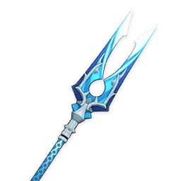
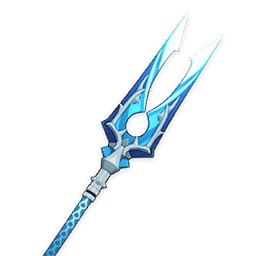

Raiden Shogun
Plane of Euthymia.
Plane of Euthymia.
 



Normal Attack: Performs up to 5 consecutive spear strikes.
Charged Attack: Consumes a certain amount of Stamina to perform an upward slash.
Plunging Attack: Plunges from mid-air to strike the ground below, damaging opponents along the path
and dealing AoE DMG upon impact.
The Raiden Shogun unveils a shard of her Euthymia, dealing Electro DMG to nearby opponents, and
granting nearby party members the Eye of Stormy Judgment.
Eye of Stormy Judgment
When characters with this buff attack and deal DMG to opponents, the Eye will unleash a coordinated
attack, dealing AoE Electro DMG at the opponent's position.
Characters who gain the Eye of Stormy Judgment will have their Elemental Burst DMG increased based
on the Energy Cost of the Elemental Burst during the Eye's duration.
The Eye can initiate one coordinated attack every 0.9s per party.
Coordinated attacks generated by characters not controlled by you deal 20% of the normal DMG.
Gathering truths unnumbered and wishes uncounted, the Raiden Shogun unleashes the Musou no Hitotachi
and deals AoE Electro DMG, using Musou Isshin in combat for a certain duration afterward. The DMG
dealt by Musou no Hitotachi and Musou Isshin's attacks will be increased based on the number of
Chakra Desiderata's Resolve stacks consumed when this skill is used.
Musou Isshin
While in this state, the Raiden Shogun will wield her tachi in battle, while her Normal, Charged,
and Plunging Attacks will be infused with Electro DMG, which cannot be overridden. When such attacks
hit opponents, she will regenerate Energy for all nearby party members. Energy can be restored this
way once every 1s, and this effect can be triggered 5 times throughout this skill's
duration.
While in this state, the Raiden Shogun's resistance to interruption is increased, and she is immune
to Electro-Charged reaction DMG.
While Musou Isshin is active, the Raiden Shogun's Normal, Charged, and Plunging Attack DMG will be
considered Elemental Burst DMG.
The effects of Musou Isshin will be cleared when the Raiden Shogun leaves the field.
Chakra Desiderata
When nearby party members (excluding the Raiden Shogun herself) use their Elemental Bursts, the
Raiden Shogun will build up Resolve stacks based on the Energy Cost of these Elemental
Bursts.
The maximum number of Resolve stacks is 60. The Resolve gained by Chakra Desiderata will be cleared
300s after the Raiden Shogun leaves the field.
When nearby party members gain Elemental Orbs or Particles, Chakra Desiderata gains 2 Resolve stacks. This effect can occur once every 3s.
Each 1% above 100% Energy Recharge that the Raiden Shogun possesses grants her:
0.6% greater Energy restoration from Musou Isshin
0.4% Electro DMG Bonus
Mora expended when ascending Swords and Polearms is decreased by 50%.